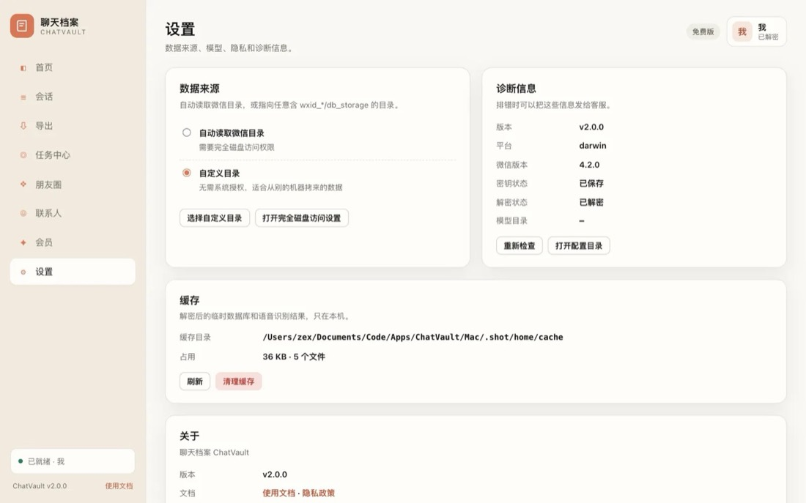
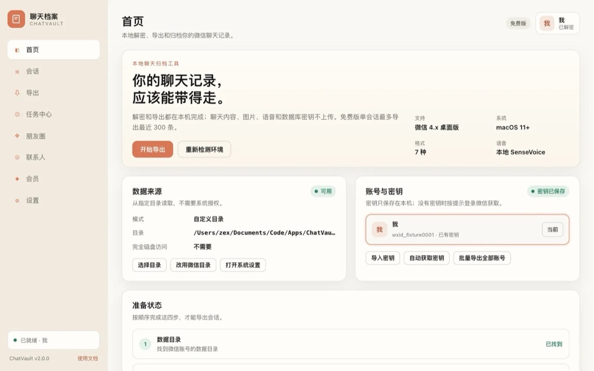
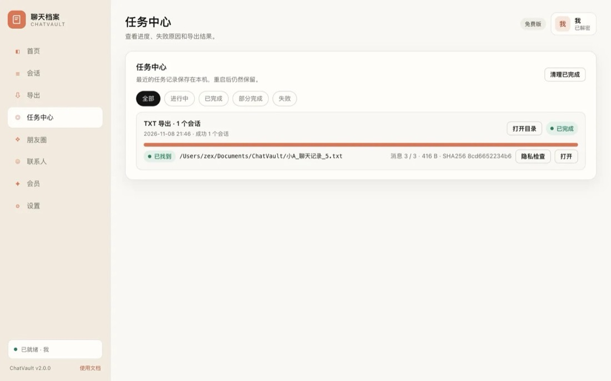
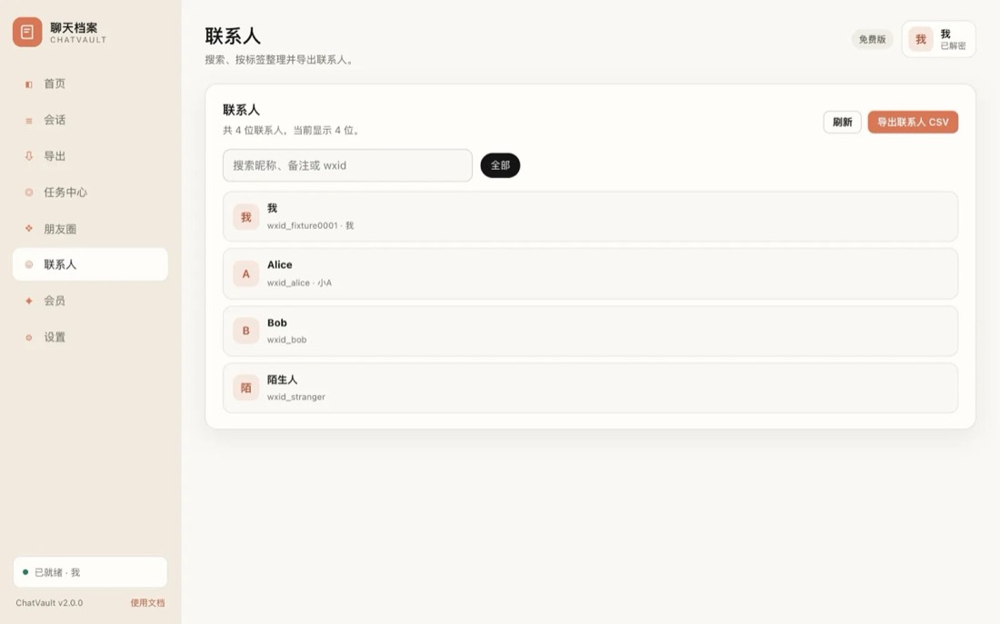
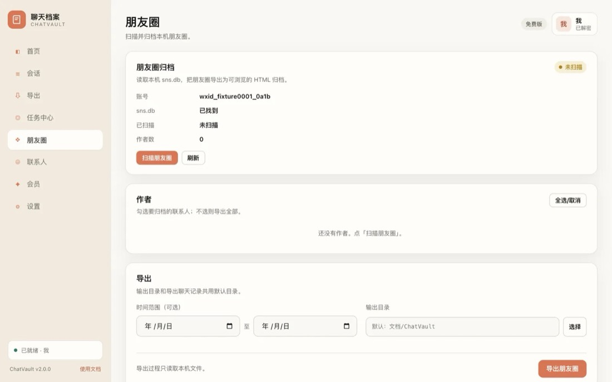

你的聊天记录， 应该能带得走。
微信把聊天存在本机一个 SQLCipher 数据库里，没有密钥打不开。聊天档案把库读出来，写成能搜索、能打印、能发给别人的文件。解密和导出都在这台电脑上完成。
会话列表，
就是导出入口
按人、按群勾选，选一个格式，剩下的交给任务中心。列表里显示的是昵称和备注，不是 wxid。
数据还没读过，先点一次刷新或解密，列表会把最近一条消息和消息数补齐。
1 条消息 · 2025-01-01 08:03 状态：未缓存 → 读取中 → 已找到 失败时给出原因，可重试或跳过会话列表里的名字来自测试账号，内容为示例数据。你打开软件看到的是自己账号的真实会话。
七种格式，
都是能打开的文件
同一段聊天，导出成七种文件。右边是这台机器上真实导出的结果，点开任何一个都能看到内容，大小和 SHA256 都是文件本身的。
语音在本机
转成文字
语音消息不发给任何在线接口。macOS 用 SenseVoice，Windows 用 whisper.cpp，模型下载一次，之后断网也能转。
model.int8.onnx239,233,841 字节tokens.txt315,894 字节导出/语音/auto_0001.mp38″ → 文字开启后，导出的文件里每条语音后面多一行「【语音转文字】」，原文和播放器都保留。
归档能加密、
能校验、能续传
文件要发给别人，就得能证明没被改过。每次导出都记消息数、文件大小和 SHA256；压缩包超过 1.5 GB 自动分片并生成校验清单。
HTML 连 media 一起打包，密码用 AES 加密；接收方用任意解压工具输入密码即可。
WZ_AES任务中心直接显示每条结果的实际消息数、字节数和 SHA256 前 12 位。
消息 3 / 3超过阈值的压缩包切成 .part001 等片段，另写一份校验清单，按顺序合并后即可解压。
1.5 GB中断或失败的批量任务，可以在任务中心点「继续」，从剩余会话接着导。
继续（2）数据不出
这台电脑
数据库密钥、聊天内容、图片和语音都留在本机。本地服务只监听 127.0.0.1，端口随机，并带一次性令牌。

断网也能
把活干完
模型下载完、密钥到手之后，解密、浏览、检索、导出全部离线完成。导出结果是一整个文件夹，压缩发给别人，对方双击就能看。

四步拿到归档
-
选账号
列出本机登录过的微信账号，显示昵称。没密钥时先显示「微信账号 · 0a1b」这样的中性名字。
-
取密钥
macOS 可以自动取：复制一份微信、注入抓取组件、打开副本，需要手机确认一次，原微信不被修改。也可以粘贴已有密钥或指向拷来的目录。
-
勾会话、选格式
按人按群勾选，选七种格式之一。要转文字就开开关，也能设时间范围和输出目录。
-
看进度、拿文件
任务中心显示总体进度、当前会话、已用时间和警告。完成直接打开文件或目录，记录重启后还在。
xattr -cr /Applications/ChatVault.app，之后不再提示。



免费版先试，
需要时再买
免费版每个会话导最近 300 条，开放 TXT 和 CSV。七种格式、时间范围和语音转文字是会员功能。
| 免费版 | 会员 | |
|---|---|---|
| 单会话导出条数 | 最近 300 条 | 不限 |
| 导出格式 | TXT / CSV | 七种全部 |
| 语音转文字 | 不可用 | 可用 |
| 时间范围筛选 | — | 可用 |
| 加密 ZIP / 分片 / 校验 | 可用 | 可用 |
| 任务中心与历史 | 可用 | 可用 |
在客户端「会员」页查看设备指纹，加微信 wxid_kvni9uk7qnlc12 购买。短码需要联网兑换，长 token 可离线验签。
下载
安装包放在网盘，同一目录下含 Windows 与 macOS 两个版本，按系统取对应文件。
Windows 遇到 SmartScreen，点「更多信息 → 仍要运行」。macOS 首次打开前执行 xattr -cr /Applications/ChatVault.app。
常见问题
导出的档案能不能给别人看、免费到哪一步、会不会动微信的数据，都在这里。
导出的档案能发给别人看吗
能。整个文件夹压缩发过去，对方双击 index.html 就能看，不用装任何软件。里面自带搜索框，图片和语音都在 media 目录里。
免费版能用到什么程度
每个会话最近 300 条，开放 TXT 和 CSV。加密 ZIP、分片、校验清单和任务中心都不限会员。
语音转文字调用哪个接口
不调用在线接口。macOS 用 SenseVoice，Windows 用 whisper.cpp，模型下载一次后在本机转写，音频不上传。
会不会影响微信正常使用
只读本地数据库，不修改微信的数据。自动取密钥会重启一次微信并打开重签名的副本，取完自动恢复原微信。
换电脑后权限码还能用吗
权限码绑定设备指纹，换机后加微信 wxid_kvni9uk7qnlc12 说明情况，咨询换机。
导出需要留多少磁盘空间
取决于聊天量。图片和语音是文件本身，一个两年的群聊常到几 GB。加密压缩会再占一份空间，分片后总量不变。